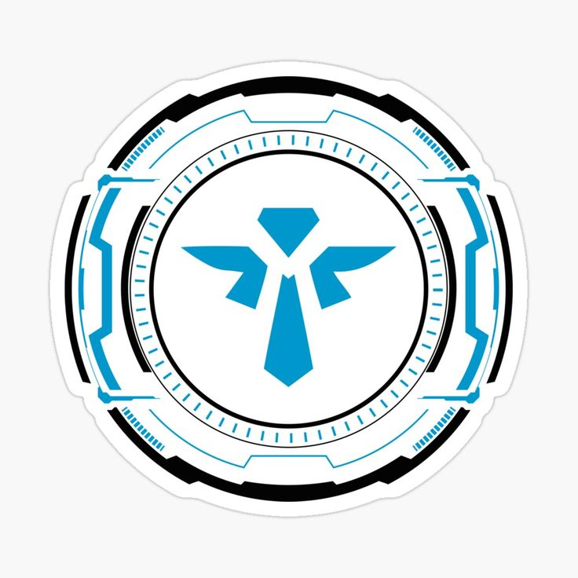
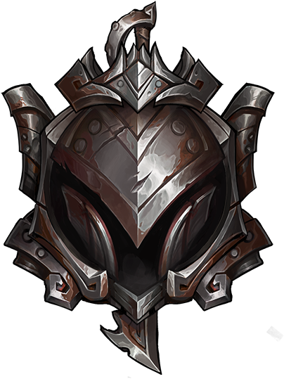
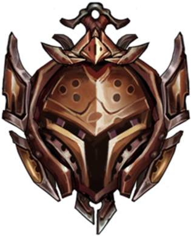
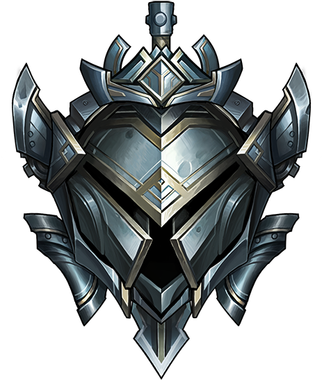

Conselho do Dia!
Nunca instale este jogo! Em hipótese alguma inicie o download! É um caminho sem volta, noites sem dormir, falta de vida social e risco de infarto diariamente. Mas, caso queira, clique no botão abaixo.
Double Kill (Senna)
Um suporte não deveria dar tanto dano, porém o melhor suporte é diferente.
O suporte TRUE
O verdaeiro suporte a equipe, ajudei dando dano ao inimigo e cura ao aliado, fazendo com que meu aliado matasse 2 inimigos e saíssemos vivos da luta.
Principais rotas jogadas por mim!
(Odeio a jungle)
TOP
Seu objetivo é controlar a rota superior e influenciar outras partes do mapa por meio de teletransportes ou rotações.
ADC
O ADC é responsável por causar muito dano na fase de combate tardia.

Suporte
É responsável por fornecer utilidade, proteção e controle de visão para a equipe.

Mid
A função do mid laner é controlar a rota central, garantindo o controle do mapa e influenciando outras rotas.
Elos alcançados!
(Odeio a jungle)

Iron
O menor elo que já estive, graças a Deus saí deste lugar terrível

Bronze
Este lugar sombrio, foi o lugar que estive por mais tempo na minha carreira gamer.

Silver
Aqui é onde me encontro agora, um lugar que todos acham que sáo bons, mas na verdade todo mundo é bronze disfarçado.

Gold
O máximo que já cheguei, saudades já não sei mais se é a palavra certa.